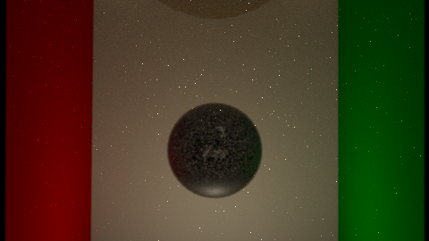

English · 한국어
A specular-diffuse-specular (SDS) path — light through glass onto a diffuse receiver — is nearly unreachable by pure eye-path tracing. SuperLuxCore runs a dedicated light-path subpass: rays emitted from the lights, steered toward surfaces that historically produced caustic energy.
Render Properties → Light Paths → Add Light Tracing is on by default for the PATH engine. On the GPU backend a fraction of the task population runs light subpaths; the eye pass consumes them as normal samples.
| Mechanism | What it does |
|---|---|
| Light focus table | Per-light ring buffer of points that produced caustic contributions; emitters re-aim a share of rays at them. |
| MGE (manifold-guided emit) | Steers emission directions toward delta-specular casters. |
| Distant-light focus | Origin (not direction) is focused for distant emitters — the only lever available. |
| LMNEE | Manifold next-event estimation connects light subpaths through specular chains. |
Path-space regularization (PSR) blurs delta specular lobes into a
small GGX lobe for the first passes so SDS energy shows up fast, then
decays the blur to zero (Kaplanyan halflife) so the converged image is
exact. On caustic-capable scenes it seeds itself automatically with
zero configuration (path.regularization.auto, default on):
sigma=0.03, halflife=64spp, gated to
path.regularization.mindepth=1 so first-bounce shading
stays unbiased. Pin path.regularization.sigma /
halflife / mindepth to tune, or set
path.regularization.auto = 0 to disable.
path.lighttracing.only — GPU light paths replace the eye
pass entirely (debug / caustic isolation).path.hybridbackforward.* — fraction of GPU tasks assigned
to light work and the caustic classification thresholds.film.outputs.*.type = LIGHT — separate light-pass output.A focused caustic ring rendered with PATHCPU + the zero-config auto-routed light pass (no manual flag needed):
